图3-23
裁剪并标注与三角形三个边边长相等的三个正方形，如图3-21所示。把它们放在三角形的三条边上，保证三角形的边长和与它对应的正方形的边长相等。
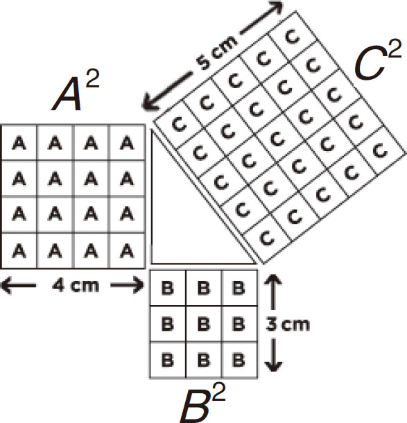
图3-21
注：A边和B边是直角三角形的两条直角边，C边是直角三角形的斜边。
接下来，从A边上剪下两个小长方形，如图3-22所示。
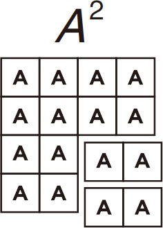
图3-22
例1：边A
＝4厘米
边B
＝3厘米
斜边C
的长度是多少？
A
2
＝3×3＝9
B
2
＝4×4＝16
A
2
＋B
2
＝25
25的平方根是5
C
边＝5厘米，因为
C
2
＝52
＝25
从C 边上拆下一个小正方形，把大块的边A放在三角形的边C 上，见图3-23。
图3-23
将B 边的正方形放置在C边的正方形的旁边，如图3-24所示。
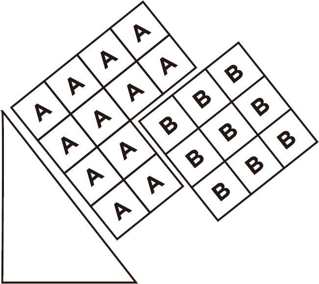
图3-24
最后，把两个小块A切开放在相应的位置来补齐正方形，见图3-25。
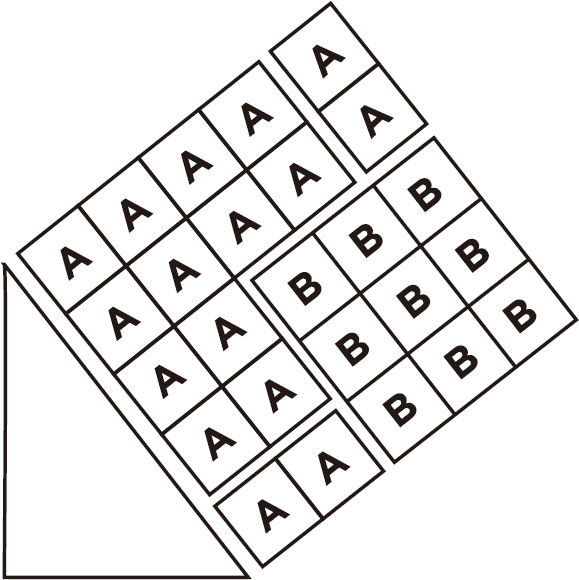
图3-25
用回形针和吸管制作一个简单但具有挑战性的装置来学习勾股定理。
需要准备的东西：
►吸管
►回形针
►纸
►透明胶带
►钢笔
►剪刀
►计算器
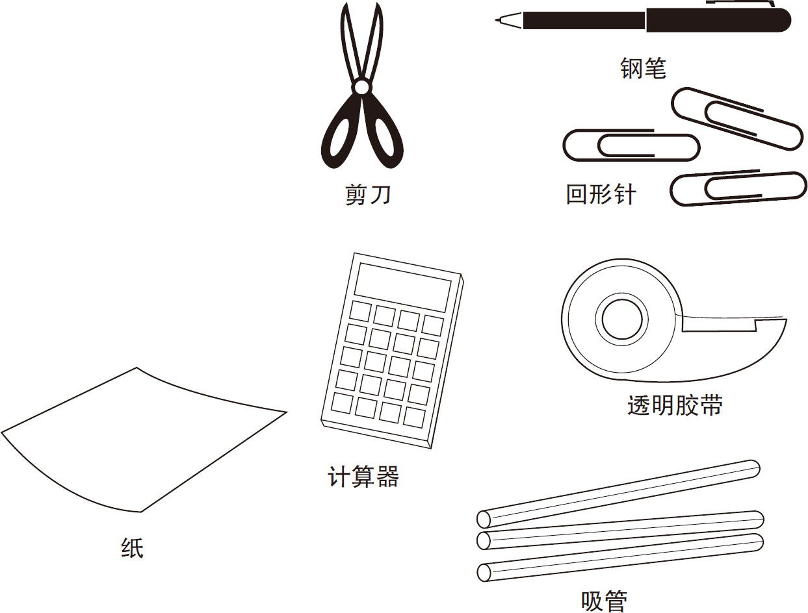
制作
将三个回形针弯曲成直角和锐角（小于90度角）的形状，如图3-26所示。
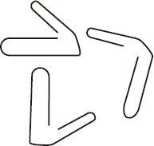
图3-26
将回形针折成不同的角度
下一步，把两根吸管剪成两个不同的长度，见图3-27。
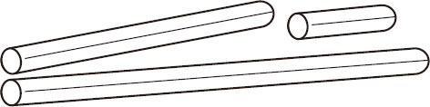
图3-27
在图3-28所示的例子中，吸管被标记为12.5厘米和21.5厘米。
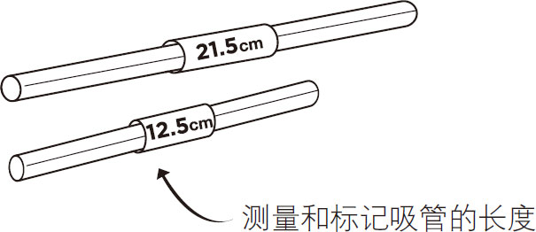
图3-28
将回形针推入吸管末端，如图3-29所示。
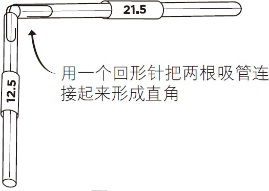
图3-29
把一根吸管放在固定好的吸管的两端附近，然后剪一个合适的长度。用回形针把它夹在另外两根吸管上，见图3-30。

图3-30
用勾股定理，计算最长吸管的长度（C 侧），如图3-31所示。
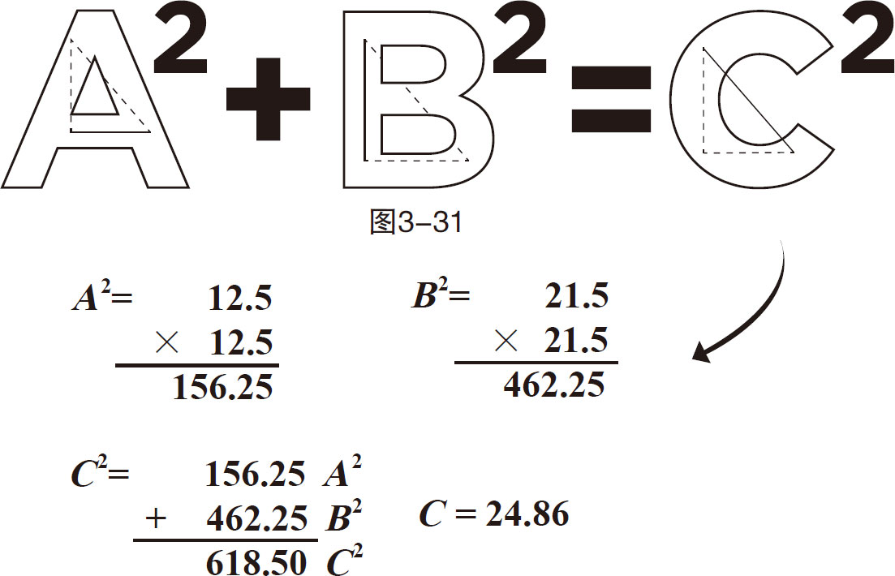
现在，您可以使用相同的方法来计算一个矩形的未知边的长度。图3-32显示了如何在门上执行此操作。接下来，我们用已知对角线长度来计算未知边的长度。
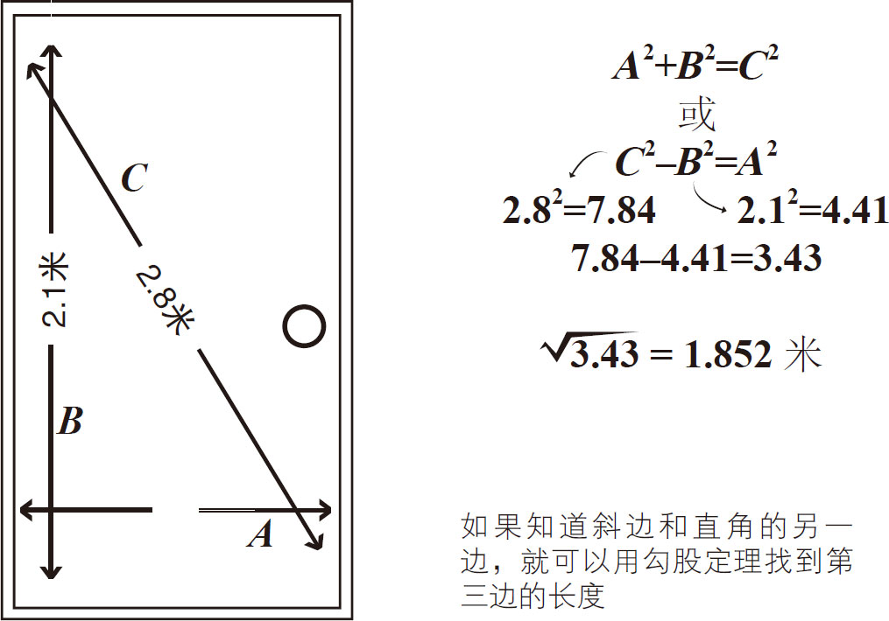
图3-32